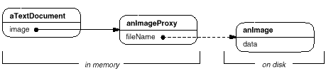
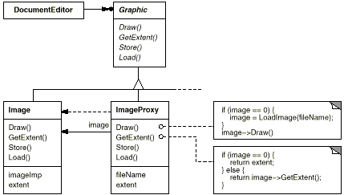
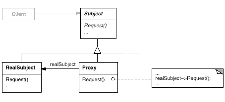
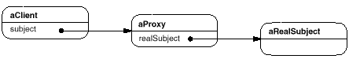

class Image;
extern Image* LoadAnImageFile(const char*);
// external function
class ImagePtr {
public:
ImagePtr(const char* imageFile);
virtual ~ImagePtr();
virtual Image* operator->();
virtual Image& operator*();
private:
Image* LoadImage();
private:
Image* _image;
const char* _imageFile;
};
ImagePtr::ImagePtr (const char* theImageFile) {
_imageFile = theImageFile;
_image = 0;
}
Image* ImagePtr::LoadImage () {
if (_image == 0) {
_image = LoadAnImageFile(_imageFile);
}
return _image;
}
Image* ImagePtr::operator-> () {
return LoadImage();
}
Image& ImagePtr::operator* () {
return *LoadImage();
}
ImagePtr image = ImagePtr("anImageFileName");
image->Draw(Point(50, 100));
// (image.operator->())->Draw(Point(50, 100))

class Graphic {
public:
virtual ~Graphic();
virtual void Draw(const Point& at) = 0;
virtual void HandleMouse(Event& event) = 0;
virtual const Point& GetExtent() = 0;
virtual void Load(istream& from) = 0;
virtual void Save(ostream& to) = 0;
protected:
Graphic();
};
class Image : public Graphic {
public:
Image(const char* file); // loads image from a file
virtual ~Image();
virtual void Draw(const Point& at);
virtual void HandleMouse(Event& event);
virtual const Point& GetExtent();
virtual void Load(istream& from);
virtual void Save(ostream& to);
private:
// ...
};
class ImageProxy : public Graphic {
public:
ImageProxy(const char* imageFile);
virtual ~ImageProxy();
virtual void Draw(const Point& at);
virtual void HandleMouse(Event& event);
virtual const Point& GetExtent();
virtual void Load(istream& from);
virtual void Save(ostream& to);
protected:
Image* GetImage();
private:
Image* _image;
Point _extent;
char* _fileName;
};
ImageProxy::ImageProxy (const char* fileName) {
_fileName = strdup(fileName);
_extent = Point::Zero; // don't know extent yet
_image = 0;
}
Image* ImageProxy::GetImage() {
if (_image == 0) {
_image = new Image(_fileName);
}
return _image;
}
const Point& ImageProxy::GetExtent () {
if (_extent == Point::Zero) {
_extent = GetImage()->GetExtent();
}
return _extent;
}
void ImageProxy::Draw (const Point& at) {
GetImage()->Draw(at);
}
void ImageProxy::HandleMouse (Event& event) {
GetImage()->HandleMouse(event);
}
void ImageProxy::Save (ostream& to) {
to << _extent << _fileName;
}
void ImageProxy::Load (istream& from) {
from >> _extent >> _fileName;
}
class TextDocument {
public:
TextDocument();
void Insert(Graphic*);
// ...
};
TextDocument* text = new TextDocument;
// ...
text->Insert(new ImageProxy("anImageFileName"));
doesNotUnderstand: aMessage
^ self realSubject
perform: aMessage selector
withArguments: aMessage arguments
doesNotUnderstand: aMessage
^ (legalMessages includes: aMessage selector)
ifTrue: [self realSubject
perform: aMessage selector
withArguments: aMessage arguments]
ifFalse: [self error: 'Illegal operator']